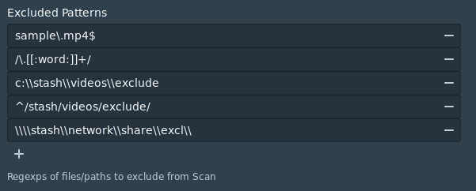

Exclude files from stash🔗
Given a valid regex, files that match even partially are excluded during the Scan process and are not entered in the database.Also during the Clean task if these files exist in the DB they are removed from it and their generated files get deleted. Prior to matching both the filenames and patterns are converted to lower case so the match is case insensitive.
Regex patterns can be added in the config file or from the UI.
If you add manually to the config file a restart is needed while from the UI you just need to click the Save button.
When added through the config file directly special care must be given to double escape the \ character.
Some examples
For the config file you need the following added
exclude:
- "sample\\.mp4$"
- "/\\.[[:word:]]+/"
- "c:\\\\stash\\\\videos\\\\exclude"
- "^/stash/videos/exclude/"
- "\\\\\\\\stash\\network\\\\share\\\\excl\\\\"
- the first excludes all files ending in
sample.mp4(.needs to be escaped also) - the second hidden directories
/.directoryname/ - the third is an example for a windows directory
c:\stash\videos\exclude - the fourth the directory
/stash/videos/exclude/ - and the last a windows network path
\\stash\network\share\excl\
and thats how it looks if you use UI (notice the difference for the \ character)

a useful link to experiment with regexps (We use "Golang" as the regex flavour)